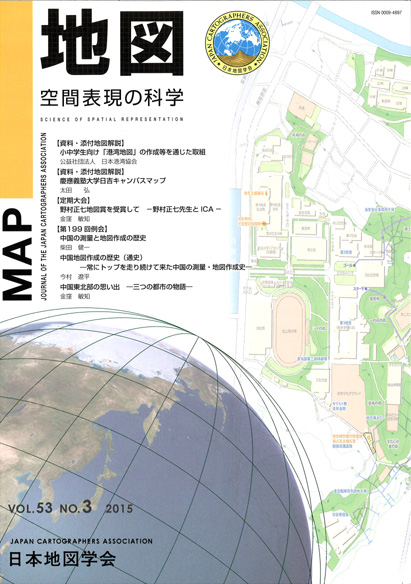
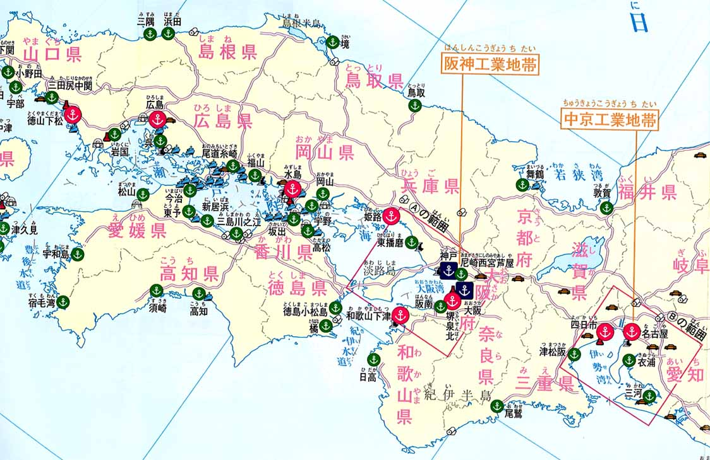
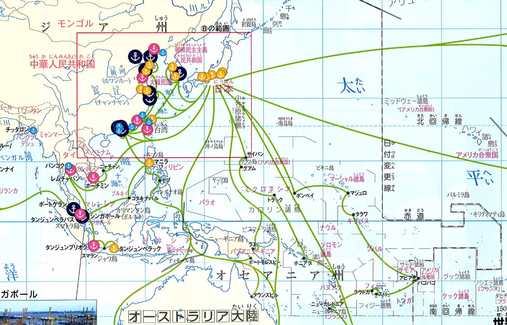
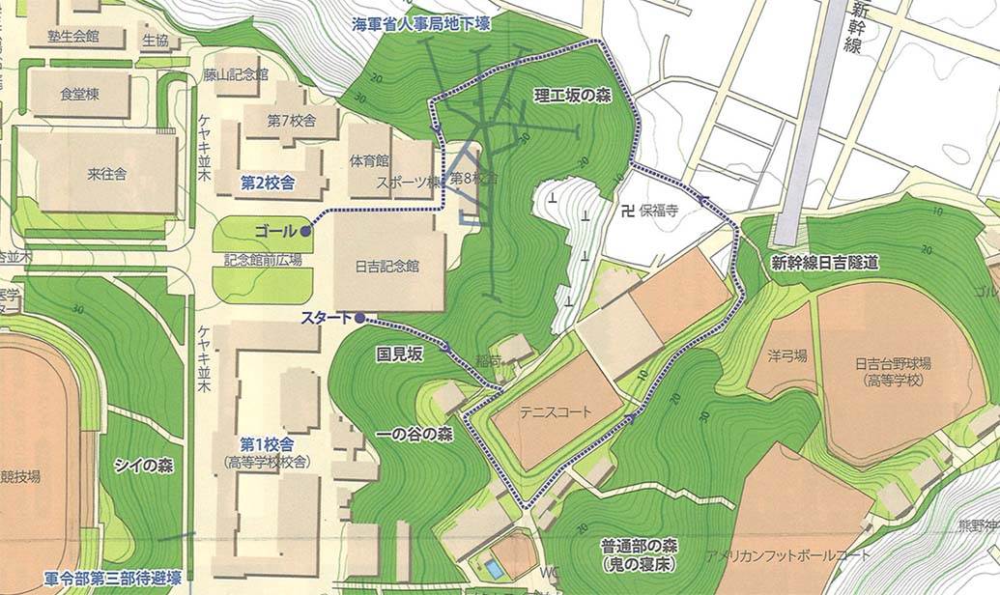

| 最 新 号 | バックナンバー | 添付地図目録 | 投 稿 規 程 |
Vol.53 No.２ （通巻２１０号） ２０１５年
| 【資料・添付地図解説】 | 小中学生向け「港湾地図」の作成等を通じた取組 | 公益社団法人 日本港湾協会 |
| キーワード：港湾地図 | ||
| 【資料・添付地図解説】 | 慶應義塾大学日吉キャンパスマップ | 太田 弘 |
| キーワード：キャンパスマップ、自然・歴史・地理解説、フィールドワーク、一貫教育 | ||
| 【定期大会】 | 野村正七地図賞を受賞して −野村正七先生とICA− | 金窪敏知 |
| 【第199回例会】 | 中国の測量と地図作成の歴史 | 柴田健一 |
| 中国地図作成の歴史（通史） −常にトップを走り続けて来た中国の測量・地図作成史− | 今村遼平 | |
| キーワード：キ中国地図測絵史、中国地図測量史、中国の科学技術史、中国地図作成史 | ||
| 中国東北部の思い出 −三つの都市の物語− | 金窪敏知 | |
| 【書評・紹介】 | 二万五千分の一地形図が変わった 進化する地図の世界 | 黒田祐一 |
| 【特別会員名簿】 | ||
| 【学会記事】 | ||
| 【添付地図】 | 日本のおもな港湾／世界のおもなコンテナ港湾 | |
| HIYOSHI CAMPUS MAP | ||
|
≪No.53 No.3 表紙≫ |
|
|  |
|
|
|
≪No.53 No.3 添付地図≫ |
|
   本図を許可なく複製・利用することを禁止します。
|